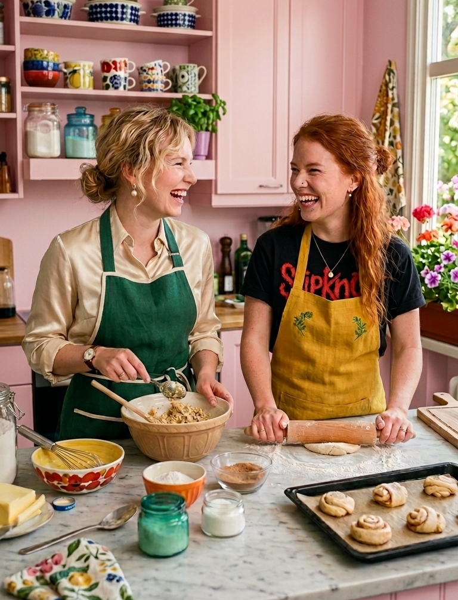

Tarina meistä
Kolmetoista vuotta sitten kahden lapsuudenystävän yhteinen unelma sai alkunsa. Olimme vielä pieniä, kun leikimme kahvilaa ja haaveilimme omasta leipomosta. Siitä lähtien ystävyytemme ja rakkautemme leivontaan ovat kulkeneet käsi kädessä – ja nyt 13 vuoden jälkeen unelmasta on tullut totta.
Olemme harrastaneet leivontaa jo 11 vuoden ajan. Kaikki alkoi kotikeittiöstä, jossa kokeilimme reseptejä, nauroimme epäonnistumisille ja iloitsimme onnistumisista. Ensimmäinen yhteinen leipomuksemme oli mokkapala – siitä tuli meille erityinen, koska se oli se hetki, jolloin tajusimme, miten hauskaa yhdessä leipominen oikeasti on. Mokkapala on yhä yksi suosikeistamme, ei vain maun, vaan myös muistojensa vuoksi.
Toinen sydäntämme lähellä oleva herkku on persikkakakku. Resepti on Anastacian äidin keksimä, ja siitä on tullut meille tärkeä perinne. Sen valmistaminen on helppoa, mutta maku on herkullinen ja täyteläinen – ja mikä parasta, siitä ovat pitäneet jopa ne, jotka eivät yleensä pidä persikasta.
Toivomme, että löydätte meidän leipomosta sen leivoksen, joka tuo lämpöä teiden sydämmeen.
- Johanna Kivi ja Anastacia Tuominen
Kuva meistä

Vasemmalla - Johanna, oikealla - Anastacia